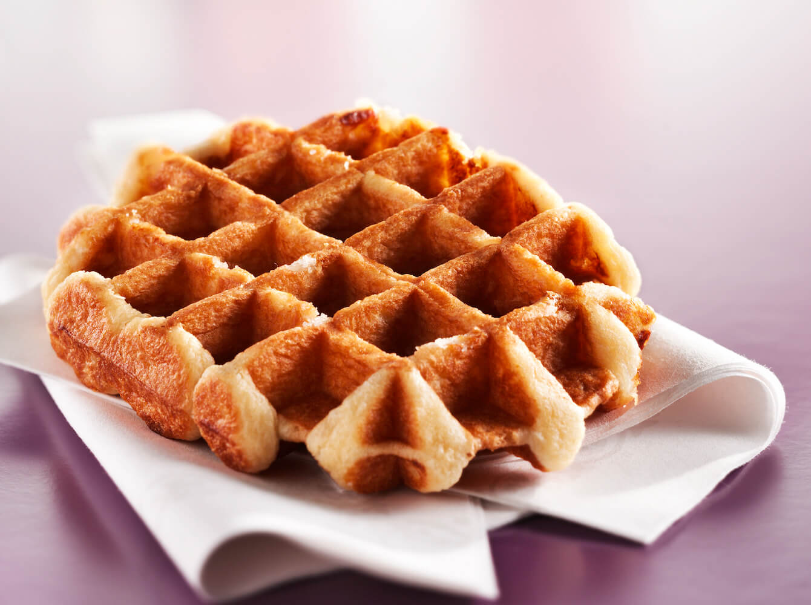
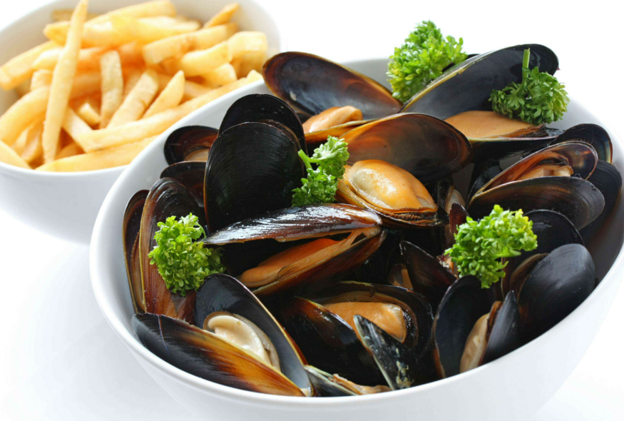
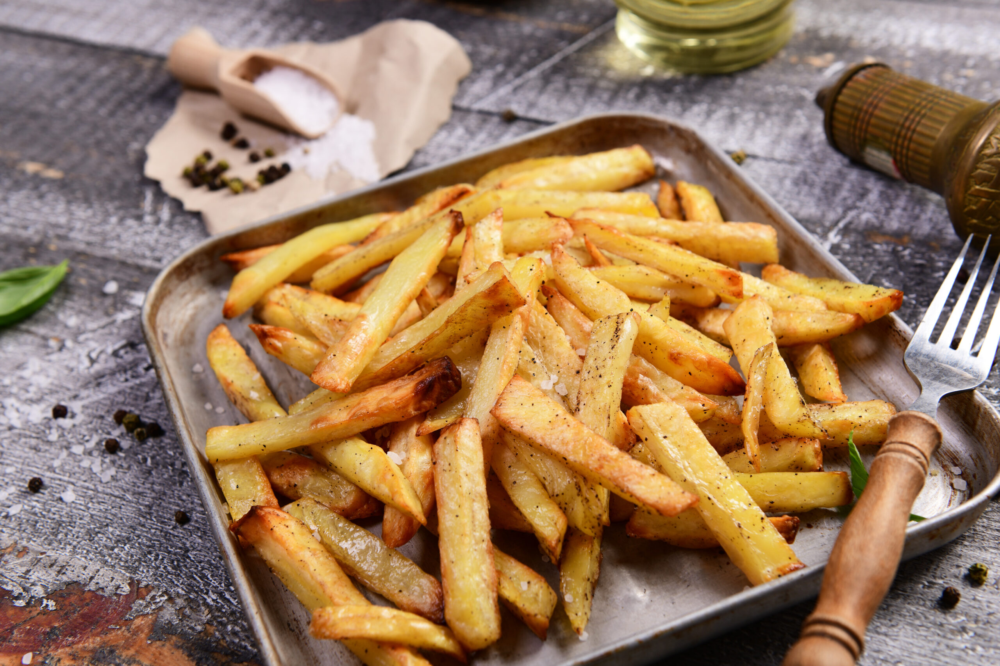
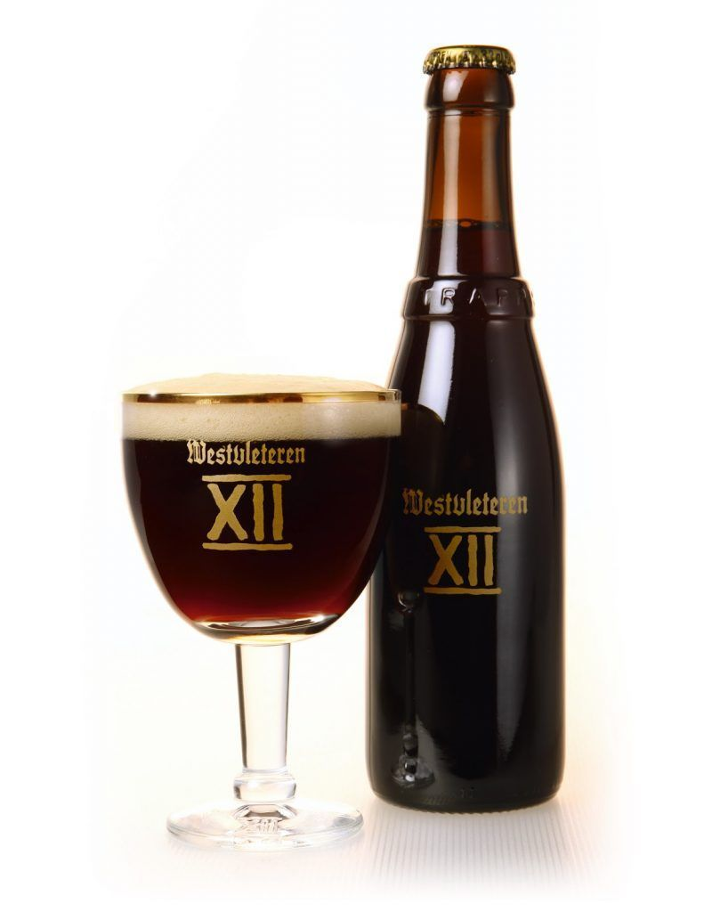

¿Qué platos típicos puedo probar en Bruselas?
Bruselas es conocida por su deliciosa gastronomía, que combina influencias francesas, flamencas y alemanas. Algunos de los platos típicos que no puedes perderte son:
| Plato | Imagen | Descripción | Precio Aproximado | Recomendado en |
|---|---|---|---|---|
| Gofres |  | Gofre belga con azúcar glas, chocolate o frutas. | 3 - 7€ | Ver mejores sitios |
| Mejillones con patatas fritas |  | Plato tradicional con mejillones al vapor. | 15 - 25€ | Ver mejores sitios |
| Papas fritas |  | Patatas fritas crujientes con salsas. | 3 - 5€ | Ver mejores sitios |
| Cerveza belga |  | Amplia variedad de cervezas locales. | 4 - 8€ | Ver mejores sitios |
🧇 Los mejores lugares para comer gofres en Bruselas
Si quieres probar los mejores gofres, te recomendamos:
- Maison Dandoy - Famoso por sus gofres crujientes y esponjosos. 🧭 Llévame allí
- Le Funambule - Perfecto para un gofre rápido cerca de la Grand Place. 🧭 Llévame allí
🦪 Mejillones con patatas fritas: ¿Dónde probarlos?
Algunos de los mejores restaurantes para probar este plato son:
- Chez Léon - Un clásico en Bruselas con una gran variedad de mejillones. 🧭 Llévame allí
- La Roue d’Or - Un restaurante tradicional belga con excelente calidad. 🧭 Llévame allí
🍻 Los mejores lugares para tomar una cerveza con vistas en Bruselas
Si quieres disfrutar de una buena cerveza con vistas panorámicas, te recomendamos:
- The 8 Rooftop - Un bar en la azotea con impresionantes vistas al centro histórico. 🧭 Llévame allí
- Place Royale - Un ambiente relajado en verano con puestos de cerveza y música en directo. 🧭 Llévame allí
🍟 Dónde encontrar las mejores patatas fritas (y económicas) en Bruselas
Si buscas unas patatas fritas deliciosas y asequibles, estos son los mejores sitios:
- Maison Antoine - Una fritería legendaria en Place Jourdan con fama mundial. 🧭 Llévame allí
- Fritland - Ideal para probar las clásicas patatas fritas belgas o una mitraillette. 🧭 Llévame allí